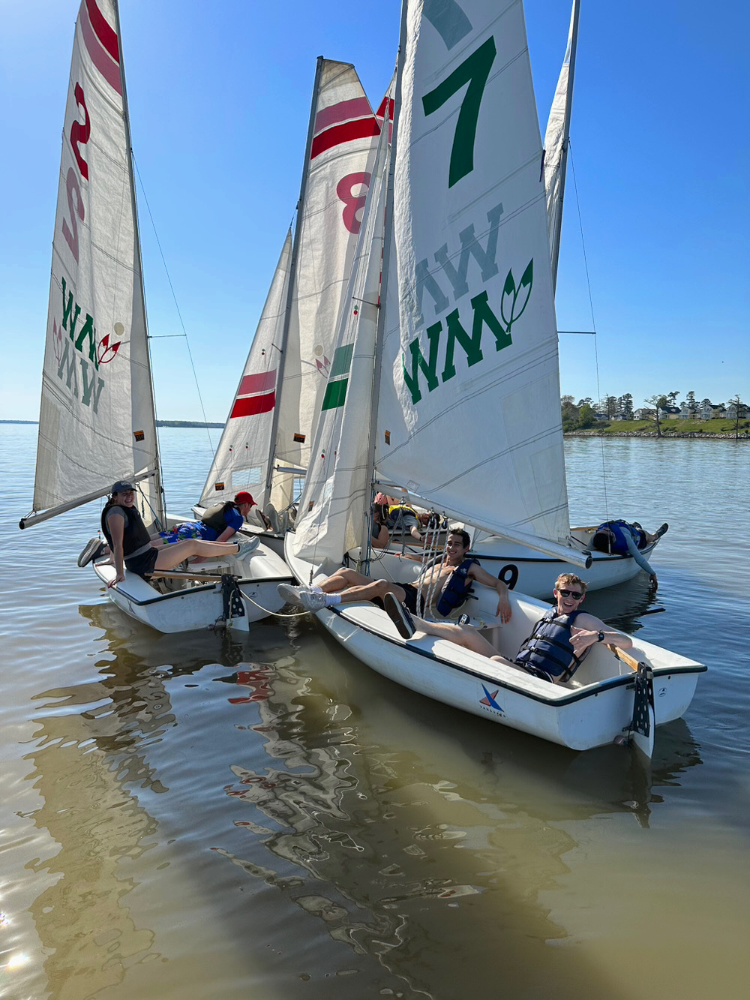
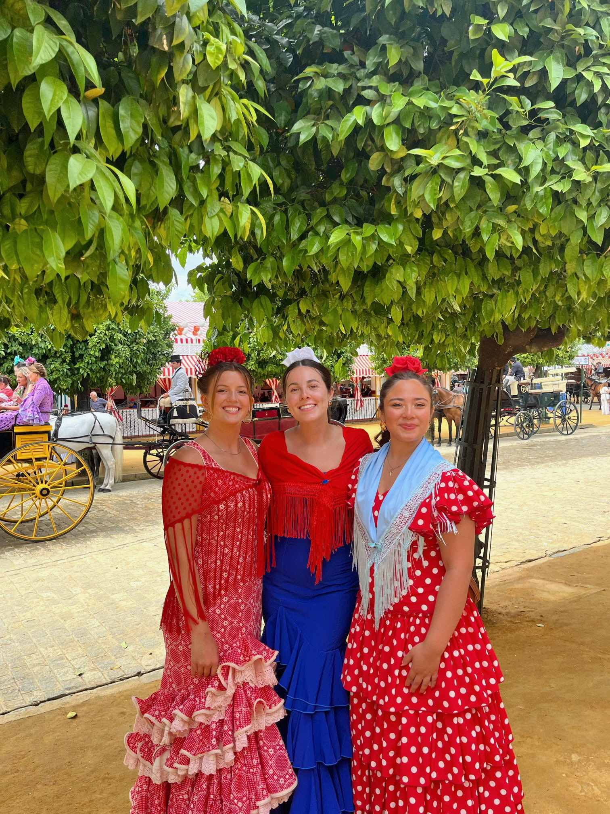

About Me
← Back to HomeRead here to learn more about me!
Professional Experience

I have gained hands-on experience across health policy, political campaigns, and international diplomacy. At the Schroeder Center for Health Policy, I manage social media content to increase engagement. As a Fall Campaign Fellow, I created outreach materials and supported regional campaign events. During my internship at the Embassy of Spain, I tracked U.S. political developments, coordinated diplomatic events, and assisted with consular operations. As a Legislative Intern in the U.S. Senate, I drafted briefing materials, managed constituent communications, and led Capitol tours. These roles strengthened my skills in research, communication, and policy analysis.
Personal Life

Outside of academics, I prioritize balance and personal growth. I attend Pure Barre regularly, enjoy walking through Colonial Williamsburg, and spend time studying at local coffee shops. On campus, I served as Vice President of Recruitment Information for my sorority and participate in the sailing club, competing in MAISA regattas. I also enjoy reading and have set a goal to read 30 books in 2026. These activities help me stay energized, focused, and grounded.
Global Footprint

Travel has significantly shaped my perspective. In Spring 2025, I studied abroad in Sevilla, Spain, where I explored U.S.–European relations and Spanish foreign policy while experiencing life abroad. Since then, I have visited 19 countries, with 15 visited during 2025 alone. From the coastline of Nice to the landscapes of Austria, each destination has broadened my cultural awareness and deepened my appreciation for international collaboration and diplomacy.